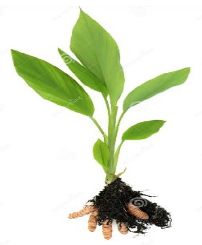
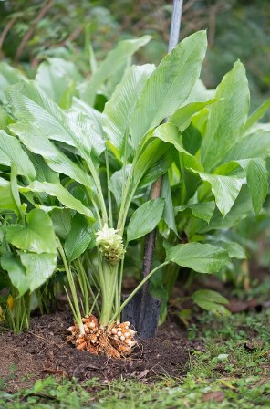

PHOTOS:


Botanical Name: Curcuma longa
Common name: Haldi
Turmeric (Curcuma longa) thrives in tropical and subtropical regions, primarily in India and Southeast Asia. It grows best in warm, humid climates with welldrained, fertile soils, often in areas with heavy rainfall and partial sunlight. Turmeric (Curcuma longa) is cultivated using rhizomes (underground stems) planted in well-drained, fertile soil. It requires a warm, humid climate with ample rainfall. The rhizomes are planted in furrows and need regular watering. Harvesting occurs 7-10 months after planting, when leaves turn yellow. Turmeric (Curcuma longa) is known for its anti-inflammatory, antioxidant, and antimicrobial properties. It helps treat arthritis, digestive disorders, and skin conditions. It is also used to alleviate respiratory issues, enhance liver function, and support cardiovascular health. Its active compound, curcumin, is largely responsible for these benefits.